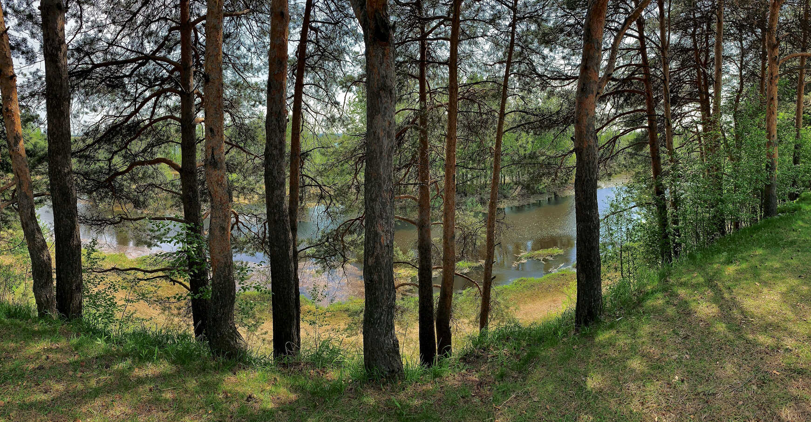

Сургу́т (хант. Сәрханӆ, Сө̆ркут) — город в России, крупнейший и старейший город Ханты-Мансийского автономного округа — Югры, административный центр Сургутского района. Как административно-территориальная единица ХМАО имеет статус города окружного значения. В рамках местного самоуправления образует муниципальное образование город Сургут со статусом городского округа как единственный населённый пункт в его составе. Один из немногих российских региональных городов, превосходящих административный центр своего субъекта федерации как по численности населения, так и по экономическому значению.
